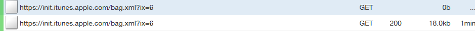

iTunes
iTunes is a media player, media library, Internet radio broadcaster, and mobile device management application developed by Apple Inc.
Spyware Level: EXTREMELY HIGH
iTunes is a spyware music player developed by Apple that collects an enormous amount of information about its users. iTunes is riddled with numerous spyware features and types of information collection, and is integrated with Apple's spyware platforms. Apple is not subtle about its spyware- it explains what it does plainly and clearly, so there is no deception about the scope and level of privacy violations committed by its software.
iTunes is integrated into the Apple ID spyware platform
iTunes is integrated with the "Apple ID" spyware platform, which it requires for you to use certain features of the app.
This spyware platform collects the following information from you[1]:
- Name
- Mailing address
- Phone Number
- E-Mail address
- Credit card information
Phoning Home
Whenever you open iTunes, these two requests are immediately made:

Here[2] is a list of all of the domains that iTunes will connect too.
So, whenever you start up iTunes, you are immediately checked into the botnet. It's not clarified exactly what iTunes is
connected to for what reason. The only hint we have comes from this passage in the privacy policy[1]:
"We may collect information such as occupation, language, zip code, area code, unique device identifier, referrer URL, location, and the time zone where an Apple product is used so that we can better understand customer behavior and improve our products, services, and advertising."
So, we can only assume that iTunes is collecting all of this information, or at least as much of it as it can get, from you and sending it back to apple.
Apple sells your personal information
Apple is very up-front about this in its privacy policy[1]:
"Apple shares personal information with companies who provide services such as information processing, extending credit, fulfilling customer orders, delivering products to you, managing and enhancing customer data, providing customer service, assessing your interest in our products and services, and conducting customer research or satisfaction surveys."
So, there can be no illusion or mistake about what happens to the information you provide to iTunes — it will be sold to datamining companies.
Sources
1.
Apple Privacy Policy
[webarchive.loc.gov]
[web.archive.org]
[www.webcitation.org]
[webarchive.nrscotland.gov.uk]
[arquivo.pt]
[collection.europarchive.org]
[archive.is]
2.
About macOS, iOS, and iTunes server host connections and iTunes background processes
[web.archive.org]
[webarchive.loc.gov]
[archive.is]
This article was last edited on 5/12/2018
If you want to edit this article, or contribute your own article(s), visit us at the git repo on Codeberg. All contributions must be licensed under the CC0 license to be accepted.

Back to catalog